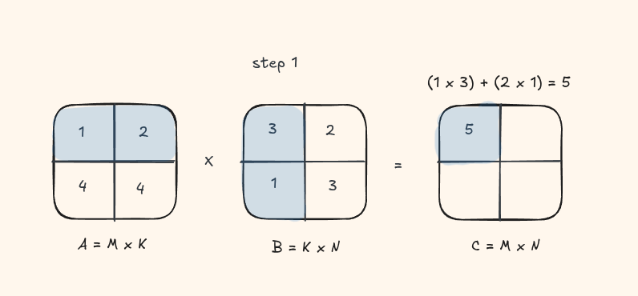
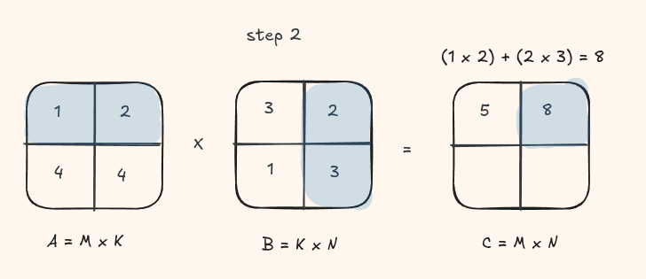
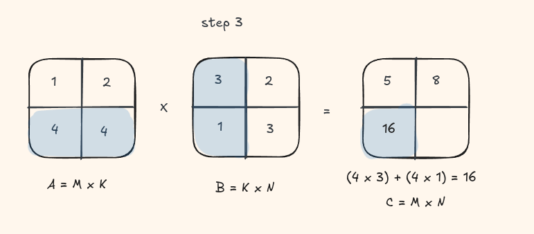
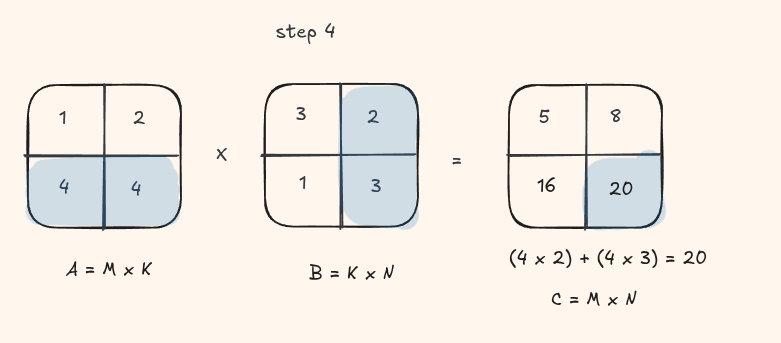
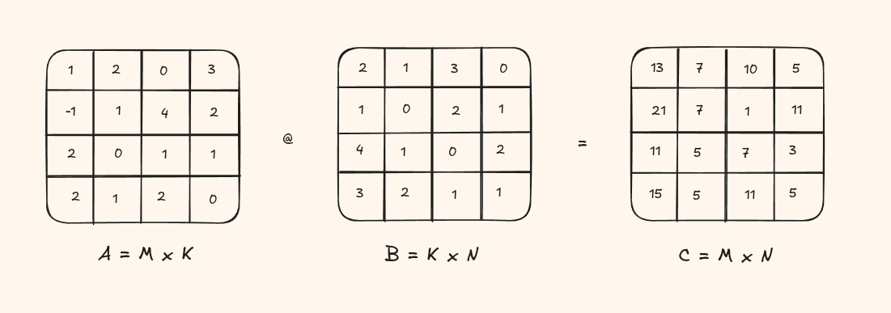
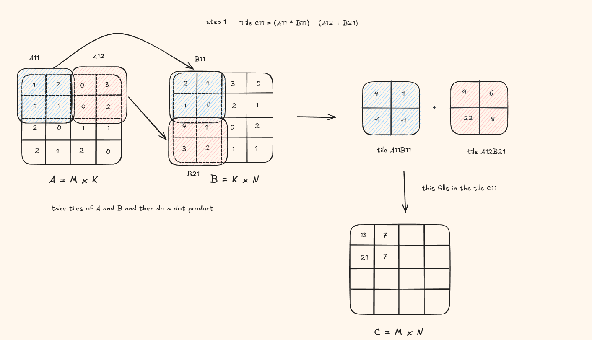
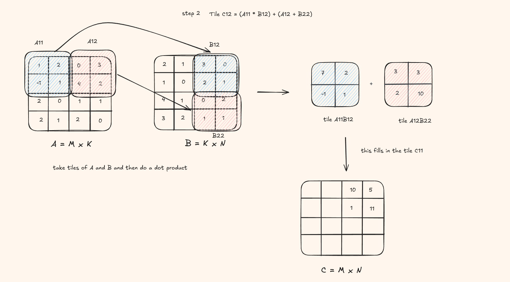
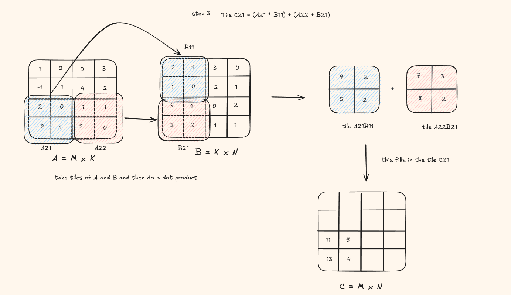
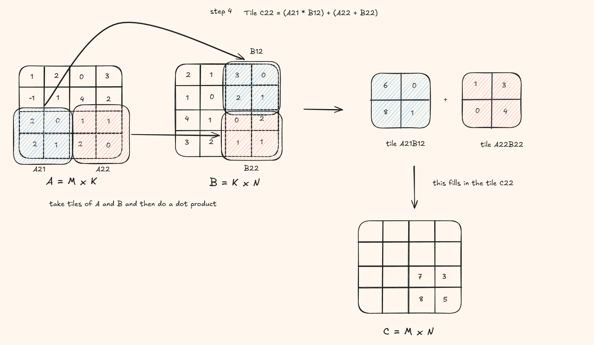

This is part 2 of a three-part series where we understand the smallest moving pieces of the Flash Attention paper and then put them together into the full algorithm.
Before continuing, I recommend reading the blog on GEMM in C++.
For getting started with CUDA, I recommend this course.
In this post we will implement matrix multiplication in CUDA C++ and then build a tiled variation that is significantly more faster by solving the issue of data movement.
Matrix Multiplication
Well, just as a reminder, at its core, matrix mulplication computes each output element as a dot product:
Naive Matrix Multiplication
The simplest GPU implementation maps one thread to each output element \(C_{ij}\). That thread loads an entire row of A and an entire column of B from global memory, then accumulates their dot product.
Lets take a look at this visually with a small matrix




This should look quite similar to the C++ version we wrote in the other blog.
__global__ void matmul(float* A, float* B, float* C, const int M, const int K, const int N){
int t_row = blockIdx.y * blockDim.y + threadIdx.y;
int t_col = blockIdx.x * blockDim.x + threadIdx.x;
if(t_row < M && t_col < N){
float tmp = 0.0f;
for(int i = 0; i < K; i++){
tmp += A[t_row * K + i] * B[i * N + t_col];
}
C[t_row * N + t_col] = tmp;
}
}
What is going on in the kernel?
Thread indexing. Each thread computes exactly one output element. We use a 2D grid of 2D blocks, so the global row and column of the output element are:
int t_row = blockIdx.y * blockDim.y + threadIdx.y;
int t_col = blockIdx.x * blockDim.x + threadIdx.x;
blockIdx tells us which block we are in, blockDim is the size of each block, and threadIdx is the thread's local position within that block. Together they give the thread's unique position in the entire output matrix.
Bounds check. The grid may be slightly larger than the matrix if the dimensions are not perfectly divisible by the block size, so we guard with if (t_row < M && t_col < N) to avoid out of bounds writes.
Dot product loop. Inside the guard, the thread iterates over the shared dimension K. On each iteration i, it reads A[t_row * K + i] and B[i * N + t_col], multiplies them, and accumulates the result into tmp. Both matrices are stored in row-major order.
Writing the result. After the loop, the accumulated dot product is written to C[t_row * N + t_col], the corresponding element in the output matrix.
Global memory bandwidth
While this kernel is correct, it is far from efficient. For every output element, the thread reads an entire row of A and an entire column of B directly from global memory, which has very high latency (~400–800 cycles). Across the whole matrix, the total number of global memory reads is:
If you think about the previous visual we saw, a lot of the reads are redundant in this kernel. We keep reloading the same rows and the columns and when the matrix gets large, we run into the memory bound realm real quick.
Tiled Matrix Multiplication
Rather than each thread fetching that data independently, we can load a tile (a small block-sized sub-matrix) into fast on-chip shared memory, and then have all threads in the block reuse that tile.
Shared memory is roughly 20x faster than global memory (~20 cycles vs ~400 cycles), but the caveat is that it is quite small, typically 48 KB per streaming multiprocessor. So we need to design an algorithm to process the matrices in tiles that fit within this budget.
Lets understand this visually again. Assume the tile size is (2 x 2)
You can see at each step, we load the blue tile and red tile, do a product product and fill in a tile in the result C matrix.





This is how it would look on code -
the visual shows a tile of result being computed. But in the code, the result is computed on the thread level so a single element at each pass instead of a whole tile being saved into the matrix C
#define BM 16
#define BK 16
#define BN 16
__global__ void tiled_matmul(float* A, float* B, float* C, const int M, const int K, const int N){
__shared__ float As[BM * BK]; // 256 elements can be loaded into this
__shared__ float Bs[BK * BN];
int global_row = blockIdx.y * blockDim.y + threadIdx.y;
int global_col = blockIdx.x * blockDim.x + threadIdx.x;
int tile_row = threadIdx.y;
int tile_col = threadIdx.x;
float tmp = 0.0f;
for(int tile_idx = 0; tile_idx < K/BK; tile_idx += 1){
// first we load onto tiles A and B
As[tile_row * BK + tile_col] = A[global_row * K + tile_idx * BK + tile_col];
Bs[tile_row * BN + tile_col] = B[(tile_idx * BK + tile_row) * N + global_col];
__syncthreads();
for(int i = 0; i < BK; i++){
tmp += As[tile_row * BK + i] * Bs[i * BN + tile_col];
}
__syncthreads();
}
C[global_row * N + global_col] = tmp;
}In the final section of the blog, we extend these ideas and apply them to build flash attention!